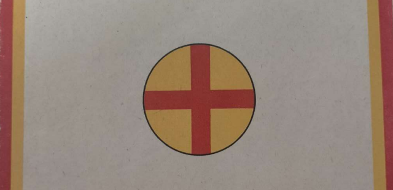
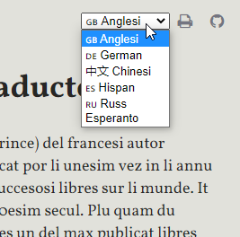

P. N. Coudenhove-Kalergi
PAN-EUROPAN MANIFEST

TRADUCTION EX GERMAN IN LI LINGUE INTERNATIONAL OCCIDENTAL
EUGEN MOESS.
VIENNA 1926.
LI OFICIE CENTRAL DEL PANEUROPAN UNION ES VIENNA (WIEN), HOFBURG, MARSCHALLSTIEGE.
PRINTERÍA A. ELKEN, REVAL, ESTONIA.
Usage
Iluminar un sol parol por vider un explication

o iluminar mani paroles por vider un naiv traduction.

Selecter tui lingue preferet por li traductiones.

Prim
Europanos!
Europanos!
Li fatal hor de Europa sona!
In europan fabricas omni die on forja armes, por lacerar europan mannes - in europan laboratorias omni die on prepara venenes, por exterminar europan féminas e infantes.
In sam témpore Europa lude con su fate in íncomprensibil frivolitá; in íncomprensibil íncuidantie it ne vide quo menacia it; in íncomprensibil ínactivitá it lassa drivar se sin volentie in li max terribil catastrofe, quel jamá ha atinget un continente.
Li politica de Europa stira a un nov guerre. Du dozen nov Alsacia-Lorenas ha nascet. Un crise succede al altri. Chascun die li europan guerre anihilativ posse erupter per un accidente - fórsan per on atentate o per un revolte, - quel transforma nor continente a un sepultoria.
Ti guerre anihilativ, quel es preparat del europan politica, pri terribilitá va superar li ultim grand guerre tam - quam ti ci ha superat li guerre germano-francés. Su elemente va esser li aer - su arme li venen - su scope li extirpation del adversario. Li combatte principal va directer se contra li cités del "hinterland", contra féminas e infantes. In ti massacre li victet nationes va esser anihilat - li victoriosis: mortalmen vulnerat.
Ti menaciant guerre significa li profund ruina de Europa, de su cultura e economie. Altri continentes va vicear it.
Li duesim dangere a quel un dissplittrat Europa marcha, es li conquestation per Russia.
Russia sta in sam relation a Europa, quam a su témpor Macedonia a Grecia.
In comensa del reyentie de Philippos null greco credet un macedonian dangere; nam tande Macedonia esset in pelmel e anarchie.
Ma li genie de Philippos ha fat órdine in li cáos e pos 20 annus li concordant popul paisan de Macedonia ha esset suficent fort, por abatter li dissplittrat popules de Grecia.
Sub li guidantie de un rubi o blanc dictator Russia, per bon recoltaturas, american capitale e german organisation vell posser restaurar se plu rapid quam li europanes conjecte. Tande li ínconcordant minor states de Europa va star contra li uniat grand imperia russian, de quel li territoria es quin vez plu grand quam li total area de Europa.
Ni li minor states de Osteuropa, de Scandinavia e del Balcan, ni li desarmat Germania vell esser capabil retener li russian assalta. Rhen, Alpes, Adria vell devenir li límite de Europa: til que anc ti límite va cader e Europa devenir Westprovincie de Russia.
Ex ti dangere existe solmen un salvation: li europan confederation. Por un concordant Europa ne existe null dangere russian. Nam it have li duplic númere de inhabitantes quam Russia e un industrie íncomparabilmen plu developat. Do li decision pri li dangere russian es ne che Russia ma che Europa.
Li sequent 20 annus va presentar al historie li spectacul de un concurse inter li unition de Europa e li restauration de Russia. Si Russia restaura se de su economic catastrofe ante quam Europa uniona se - tande Europa ínsalvabilmen va venir sub hegemonia russian; si Europa uniona se ante que Russia es restaurat - tande Europa es salvat del dangere russian.
Do li libertá de Europa es in li manus del Europanes.
Li triesim dangere por li vive de Europa es: li economic ruina.
Nequande li dissplittrat economie del ínunit states de Europa posse concurrentiar contra li índependent economie del Unit States de America. Nam li europan intra-doanes impedi omni modic production. Do li economic parcelles europan es condamnat a esser aplatat in futur per li economic imperias extra-europan de America, Britannia, Russia, e Ostasia - sam quam merceros per trustes.
Cronic crises va subminar li europan economie e augmentar li indigentie, li misere e li custas - til que finalmen li bankrottat Europa va esser economic colonia american. Ti situation va ducter ad insclavation del europan laboreros per li american capitale, quel va escapar de omni control fat per su europan ovreros e oficiarios.
De ti dangere existe solmen un salvation:
Li confederation del europan continente a un doanal union, abolition del europan intra-doanes e creation de un economic territoria pan-europan.
Omni altri via ducte al ruina.
2
Do li dissplittrat Europa marcha vers un triplic catastrofe:
-
a un guerre exterminativ;
-
al submission per Russia;
-
al economic ruina.
Li unic salvation ex ti menaciant catastrofes es: Paneuropa; li confederation de omni democratic states de Europa continental a un international gruppe, a un union politic e economic.
Li dangere del guerre exterminativ europan posse esser bannit solmen per un arbitrari pact paneuropan;
li dangere del domination per Russia posse esser bannir solmen per un coalition defensiv paneuropan;
li dangere del economic ruina posse esser bannit solmen per un union doanal paneuropan.
Li arbitrari pact secura li pace - li coalition defensiv secura li libertá - li union doanal secura li economie.
Ti tri punctus in essentie contene li programma paneuropan.
Paneuropa consiste del peninsul inter Russia, Atlantic e mar Mediterran; adplu Island e li colonies del europan states. Li grand europan colonie, quel consiste de demí Africa inter Tripoli e Congo, Marocco e Angola, per rational explotation vell posser provider Europa per crud materiales.
3
Russia e Anglia es vicines de Paneurpa. Ti du grand imperias es capabil viver anc sin Europa - durant que li céteri states de ti continente es ligat per su geografic situation al comunitá del fate; condamnat o perir in comunitá - o resurrecter in comunitá.
De mult flancas on postula li inclusion de Anglia in li futuri Paneuropa. Ti postulation falli pro li structura del imperia federativ britannic. Nequande li dominiones vell tolerar, que Anglia intra in plu strett relationes a un statal sistema altri quam ili; per to li juntion del anglés reyia a Paneuropa deveni un ilusion. Li adhesion del imperia federativ britannic a Paneuropa deveni un ilusion per li ínpossibilitá transformar Canada a un europan state. Li consequentie de ti provocation de America vell esser li adhesion de Canada al Panamerican Union e adplu li ruina del grand imperia britannic.
Do un alliation inter li federation paneuropan e panbritannic in present es ínpossibil. Támen un colaboration politic inter ti du complexes es possibil e necessi por servir al pace e progress. In null case Paneuropa va esser directet contra Anglia.
Anc li adhesion de Russia a Paneuropa hotémpore es ínpossibil. Un confederation inter democratic states in un látere e sovietistic in altri látere es practicmen ne realisabil. Per su renunciation al democratie, Russia spontanmen ha retraet se del stat-sistema europan.
Anc contra Russia Paneuropa have nequal ínamical intention. Su scope es li conservation del russo-europan pace, comun desarmation, economic colaboration e respecte al reciproc developation intern.
Si Paneuropa es creat, tande quam egaljurisat grand imperia it posse formar un nov societá de nationes con America, Britannia, Russia, e Ostasia. In tal societá null continente va timer intervention extran. Solmen a tal federation mundal li Unit States de America e Soviet Russia vell posser adherer.
Quam índependent gruppe intra li Societá de Nationes Paneuropa vell haver li possibilitá self directer su fate, vice dever ceder li max important decisiones europan a sudamericanes e asiates, qualmen to hodie eveni in Genève. Al american Monroe-doctrina, pos cent annus, in fine deve esser contraposit un europan: "Europa al europanes!"
Li paneuropan programma constitue un índivisibil totalité. Li via es diferent - li scope comun. Sin assecuration del permanent pace europan un union doanal europan es ínpossibil. Til quande omni state vive in permanent timore de su vicines, it deve preparar se, in casu de guerre, self producter omni necessi merces quam un forteresse. Por to it have beson por national industries e doane protectiv. Solmen li desaparition del dangere de guerre por obligation arbitrari vell aperter al europan states li via al abolition del límites doanal e transition al líber comercie europan. Invers, li national industries e lor protection per li state constitue un centre del europan nationalisme e un menacie del europan pace. Ma comunité de interesses es li max secur via o politic comunité. Talmen li politic parte del paneuropan programma apoya li economic e invers.
4
Li via al realisation de Paneuropa es li sequent:
Unesimmen: Gruppation del europan states secun li modelle de Panamerica; to vell esser possibil sive intern del Societé de Nationes (pos li adhesion de Germania), sive per convocation de un conferentie paneuropan secun li modelle del conferentie panamerican.
Duesimmen: Federation defensiv por protection del comun límite in ost.
Triesimmen: Conclusion de arbitrari obligationes e reciproc garantíe del límites inter li states de Europa;
Quaresimmen: Preparar li via a un union doanal per periodic conferenties economic del europan states.
Ti programma, quel ne contene alquicos ínpossibil, vell dever esser comensat sin ajornation de omnis qui reconosse li situation de Europa e vole salvar su continente.
5
Li unesim passu al solution del europan problema es li submission de it al discussion. Li dangeres, qui menacia nor continente, ne es suficentmen combattet, pro que ili ne es suficent reconosset. Li politic claration es li via al politic renascentie.
Nam 90 per cent de omni europanes vole del politica necos plu quam li assecuration del pace e del libertá e li augmentation del comforte. Si it va esser les clar, que li hodial politica con dangere mortal e in permanentie menacia li pace, li libertá e li comforte, ili va abandonar ti declivi via e serchar un altri direction politic.
Pro que un submission del europan problema al discussion ducte in prescrit trajectorie a su solution, li politica ne posi it - ma supresse it.
On posse reprochar al guvernamentes ne que ili misresponde al europan problema, ma que ili totalmen ne considera it.
Durant que li social problema con jure es discusset in omniloc e omnidie: in presse e parlament, litteratura e familie - li duesim vital problema por 300 million europanes es simplicmen sufocat per silentie.
Li europan problema cúlmina in li question:
"Esque it es possibil, que sur li micri europan peninsul 25 states vive in international anarchie un apu altru, sin que ti statu fini per un terribil catastrofe politic, economic e cultural?"
Anti-europanes responde a ti question, que to ya esset possibil anc til nu.
Ti-ci responsion misconosse li factes. Nam in li 20-esim secul omni supositiones por li multistatitá de Europa de til nu completmen ha mutat se.
Li anteyan Europa havet li hegemonie mundal. Secur a exterior, it posset permisser se li luxu de intern guerres sin dangere mortal. In li 20-esim secul ti europan hegemonie mundan ha bancrottat. Asia ha elevat se sub li guidantie de Japan. America ha superat omni europan states, Russia ha separat se de Europa per li introduction del sovietisme, e Anglia, unvez grand-imperia europan, ha devenit li cap de un intercontinental imperia mundan, de quel li centre de gravitation jace in li Indic Ocean.
Contra ti crescent organisation del extra-europan munde a potent imperias sta li crescent desorganisation del europan munde. Ci li dissplittration ha plu progresset pos li guerre. In Central Europa du grand imperias ha cadet por far plazze a un serie de plu micri states. Talmen Europa es expussat ex li centre del munde; alquande subject del politica mundan - it nu ha devenit object de it: debilat, vulnerat, apovrat, lacerat.
Un restauration del hegemonie europan in li munde es ínpossibil; ma ancor sembla esser possibil, per unition del europan states, elevar ti continente a un quinesim imperia mundan e talmen salvar li pace, li libertá e li comforte del europanes.
Anc li progresses del tecnica ha fat impossibil un retorna de Europa in li secul passat. Li stal-guerre del passate ha solmen debilat li popules - li gas-guerre del futur vell anihilar les. In ultra automobil e relvia, aviatica e radio ha tam diminuet li europan distanties, que Europa de hodie ha devenit plu litt quam Italia del Renascentie.
Ti aproximation de omni europan states ha sammen multiplicat li comunitá del interesses quam lor contrastes. On deve atribuer al tecnica, que hodie li interesses del vicin states europan es tam ligat un al altri, que ili have nu solmen li alternative inter ínamicitá e federation; índiferent vicinitá ha devenit ínpossibil.
Do li tot problema europan culmina in li alternative:
-
Guerre o pace!
-
Cáos - o organisation!
-
Concurrent armation - o desarmation!
-
Concurrentie - o cooperation!
-
Ruination - o coalition!
Null europan in futur posse escapar ti decision. Neutralitá es perfidie. Qui ne es pan-europano - es antieuropano!
Qui ne vide li dangeres, vers queles li dissplittrat Europa marcha, ti es ciec politicmen; ma qui vide ti dangeres e támen fa necos, por preventer les - es un trahitor e criminard pri Europa; il sacrifica li futur de su filies, de su nation, de su cultura a su comoditá o a su profite; il fa se complicio pri omni catastrofes queles deve irrupter súper Europa, si it persiste in su curs hodial.
6
Li futur de Europa depende del response al europan problema. Ti response jace in li manus del europanes. Noi vive in democratic states e noi es conresponsiv pri li politica de nor guvernamentes. Noi ne have li jure restricter nos a critica, ma li deventie colaborar pri li formation de nor fate politic.
Si li popules de Europa vole - Paneuropa va nascer; it es solmen necessi, que ili refusa votar a omni candidates e partises, de queles li programma extern es anti-europan. Talmen omni europan posse colaborar in li perition - o in li reviventie de Europa.
Li majorité del europanes ne vide li decision, quel es in question, e li responsivitiá, quel pesa sur it. Demagogic frases ha ciecat grand masses de europanes: ciec contra li cáos de hodie - ciec contra li ciecitá de lor guides. In compensation altris ha devenit sin esperantie ínactiv; ili ha renunciat li iniciative politic e ha cedet it a folles, queles sin cap curre furente vers li abisse e trena con se li apatic masses in li perition.
Ti du gruppes de europanes: li ciecs e li ínfirmes it es necessi revigilantar les. Li unis deve aprender vider, li altris voler. Ta es necessi politic intellectu - ci politic volentie.
Sempre denov li simplic veritá deve esser repetit: un dissplittrat Europa ducte a guerre, opression, misere; un unitari Europa a pace, libertá, comforte.
Si alquande ti alternative in su tot importantie es clar al europanes - tande omni europane mey selecter, sur quel de ti du vias il vole marchar: sur li via del europan anarchie - o sur li via del europan organisation; sur li via del morte - o sur li via del vive.
Li combatte por Paneuropa va esser dur e exasperat. It postula crede, perseverantie, resolution. Li question es plu quam li fate de un guvernament; li question es existentie o non-existentie del homanité europan!
Li guidantes del antieuropanes es tenaci e astut. Ili va trovar sempre nov signal-paroles, por combatter Paneuropa. Ili va passar li iniciative paneuropan a su ínamics - por impedir li conjuntion; ili va posir questiones secundari in li unesim rang - por evitar li problema cardinal; ili va circumvallar se detra li idé de un federation mundan - por impedir e traversar Paneuropa; finalmen ili va provar, declarar Paneuropa quam utopie, por refusar it poy, con li expression de max cordial simpatie.
Europanes, ples ne lassar intimidar vos per tal manovres! Ples responder les, que omni popul deve comensar li europanisation che se, pro que nequi posse comensar che li altri. E que ye un die ne va exister plu alt honor por un popul europan, quam: har professet Paneuropa quam unesim.
Ples responder a ti, qui refusa Paneuropa pro su límites, que it ne posse atender li disruption del britannic o li democratisation del russian state. Ma que Paneuropa es vivent e organic quam chascun politic creation e que su futuri union con Russia e Anglia ne es impossibil.
Ples responder a ti, secun qui un mutation del hodial límites es li precondition de un Nov-Europa, que un discolation de ti límites e possibil solmen per general guerre e ruina - durant que li deconstruction de ili in national, strategic e economic concernentie per protection del minorités, arbitrage-pacte e union doanal ducte a pace e comforte; que stabil límites es possibil in Europa - ma equitabil límites es impossibil.
Ples responder a ti, qui refusa Paneuropa in li nómine del federation mundan, que justmen Paneuropa es li via por renovar li Liga de Nationes e aperter li porta a it por Russia e America. Que Europa solmen es unesim gradu, ne contrast al federation mundan, e que lu desirabil es nominat politica solmen in li cadre de lu possibil.
Finalmen ples responder a ti, qui vole declarar Paneuropa quam utopie, que ante su nascentie null grand eveniment historic escapar li reprocha esser utopie. Ma Paneuropa ne es utopie, pro que nequel lege natural barra li via a su realisation: solmen li volentie del europanes posse impedir e traversar it - solmen li volentie del europanes posse crear it!
Pro to ples responder a ti qui questiona vos, ca Paneuropa va nascer - o ne: "It va, si vu vole! Si vu vole it con energie e persistentie! Ci ne es question, ca it va nascer - ma: que it posse nascer. Nam noi ne es astrologos - ma politicos; ne profetes - ma combattentes!"
7
A ti combatte por Europa noi advoca omnis qui crede li possibilitá e li necessitá del Unit States de Europa; por qui Paneuropa ne es utopie - ma programma; ne reveríe - ma postulate!
Avan ti grand scope li grand contrastes de nation, de confession e de partise desapari; unesimmen li dom deve esser constructet, ante que li disputation pri li tapetes comensa!
Do partises e confessiones mey decider lor contrastes in li politica intern - in li politica extern ili deve esser concordant in li combatte contra li ínamics del europan pensa. Si Paneuropa victe - tande li via es líber por li solution de omni problemas social e cultural; si Paneuropa sucumbe - tande omni céteri problemas solue se per se self, pro que pos un generation Europa va esser un masse-tomb e un ruin-masse - sepultoria de un cultura alquande hant floreat.
Solmen per concordie li paneuropanes de omni lingues posse victoriar súper li ínunit antieuropanes, qui combatte se reciproc in su chauvinisme.
Li armes in li combatte por Paneuropa es: claration e propaganda. Un resoluet e convictet paneuropano valora plu quam mill debiles e dubitantes. Nam li victorie del pensa depende del energie de crede e propaganda del unesim paneuropanes.
Pro to, europanes, ples jettar li europan problema in omni debattes; in hem e inter amics, in societés e in conventes, in li presse e in li litteratura! Ples fortiar vor colegos, decider se por o contra li europan pensa! Ples aperter lor ocules, ples eraffar les ex lor índiferentie!
Ples far clar a omni, que ci it concerne li totalité. Si vor adversarios es fort: ples esser plu fort! Si ili es astut, ples esser plu astut! Si ili es resolut: ples esser plu resolut quam ili! Ples refutar les in omniloc, ples monstrar, ad ú lor via ducte les! Ples demascar lor guidantes quam misductores e ciecs!
Ples clarar ti qui es antieuropano pro ciecitá! Ples combatter ti qui es contra Paneuropa pro follie! Ples anihilar ti qui es contra Paneuropa pro passion de profite e ambicie! Nam ili vendi e mercacha vor future e li future de vor filies: ne existe plu mal trahitor e plu dangerosi criminardes quam ili!
In ti combatte contra ciecitá, follie e crímine del antieuropan politica vor devise mey esser: claritá del intelectu e puritá del volentie.
Ultim
Li "Paneuropan Union" es li organ del paneuropan movement. Li adhesion es apert a omnis, qui vole salvar e unir Europa: a féminas e mannes, a societés e organisationes. It imposa a su combattentes li deventie combatter por Paneuropa. Chascun ples combatter per ti medies queles il dispone. Ples recrutar nov paneuropanes, ples obligar vor candidates professer li programma europan inaugurativ! Qui posse payar por it, ples payar! Qui posse scrir, ples scrir por it!
Nam li via a Paneuropa es nominat:
Propaganda, propaganda, propaganda!
Quo Komensky e Nietsche ha revat - quo Kant ha imaginat - quo Bonaparte e Mazzini ha volet - li paneuropan movement va realisar it: li Unit States de Europa!
In li combatte por Paneuropa li roles es talmen distribuet, que li german paneuropanes combatte solmen contra german antieuropanes - e li francés paneuropanes contra li francés antieuropanes. Chascun altri tactica adporta plu mult damage quam avantage e augmenta li chauvinisme, in vice de diminuer it. Solmen si li europan pensa ha victoriat contra li chauvinisme in un popul, it have jure, portar it ad extern.
Li unesim paneuropanes deve conscir que ili es avan-postos de un million-armé in li combatte decisiv por li futuritá de lor continente.
In li signe del sole-cruce, quel junte li sole del ilumination con li rubi cruce del international humanitá - li paneuropan idé va victoriar tot mental debilitá e ínhumanitá de destructiv politica chauvinistic.
In ti signe va crescer Nov-Europa, quel es professet ja hodie del max bon europanes.
Europanes, ples auxiliar preparar ti grand separation inter futur e passat, inter humanitá e barbarisme, ilumination e inciecation, renascentie e anihilation!
Stante avan li alternative inter pace e guerre, libertá e opression, comforte e ruina, Europa va decider se in su preponderant majorité por Paneuropa.
Qui ama su nation, deve voler Paneuropa.
Qui ama su familie, deve voler Paneuropa!
Qui ama se self, deve voler Paneuropa.
Nam solmen un durant pace europan secura li futur del europan nationes, families e homes.
Do, Europanes, ples adherer in masses al pan-europan movement e ples salvar Europa e vor filies!